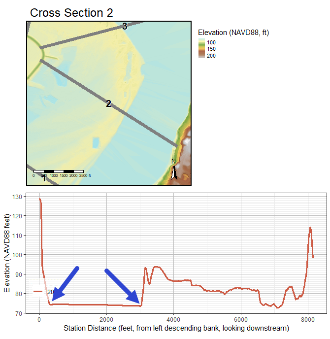
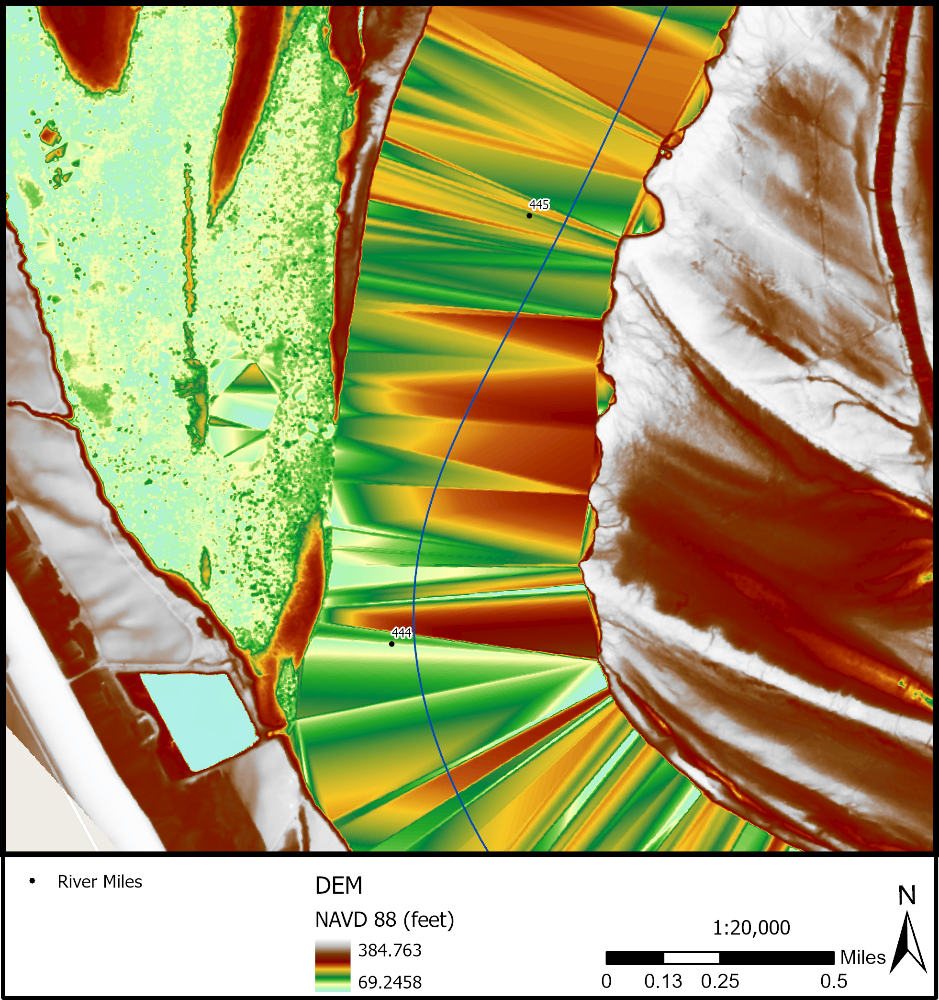

2 Concepts
Fluvial Geomorphology
This section will discuss
Reach
hierarchical levels: project study area, site, reach
Flowline
- centerline
- thalweg
Position Along River
Pool-Riffle-Run
Cross Section
Bankfull
Flood Prone
Planform {planform-concept}
- loops contain bends
- loops have an apex
- loops alternate
- crossovers
- Valley Line
Geospatial
LiDAR Stream Measurement
- discuss the difference between water surface and channel bottom
- diagram of stream
Terrain Models
- point cloud
- raster
- surface models, terrain models
Terrain Visualization
Synthetic Stream Delineation
Flow Accumulation
Hydro Modification
Detrending
- “relative bank height”
- figure: side-by-side DEM and detrend
- figure: side-by-side longitudinal profiles
Water Surface Elevation
Since water almost completely absorbs LiDAR light pulses, areas of water are usually missing elevation data. However, this does not mean that water surface elevation (WSE) cannot be derived from or accurately represented in LiDAR datasets. The elevation of water areas in DEMs derived from LiDAR point clouds can be represented due to the acquisition of points along the water’s edge. See Figure x1 for an illustration of where these points are located.
The point cloud density will largely determine how accurately the water surface is captured, driven by the probability of capturing points as close to the water line as possible. In relatively low point cloud density LiDAR collections (>=1m point cloud spacing) the water surface is often represented with artifacts. These artifacts are commonly referred to as TIN (Triangulated Irregular Networks) artifacts created when the DEM is derived. These occur when LiDAR points were not regularly acquired close to the water’s edge. Sections of the banklines where LiDAR points were not acquired close to the water’s edge will appear as triangular “humps” in the water surface. In Figure x2, these “hump” artifacts are clearly visible as reddish areas, while the lower elevation areas close to the water surface elevation appears as green and blue areas.

Spatial Data Clearinghouses for Terrain Data
- 3DEP
- The National Map
- State clearinghouses